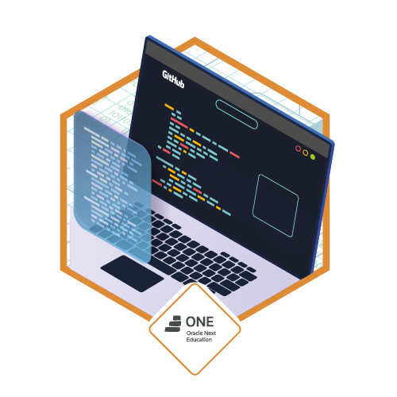

Teste de layout
Acadêmico & Profissional
Nesse projeto, criarei uma página destinada a um currículo acadêmico e profissional

Abaixo estão os tópicos importantes que deverão haver nesse projeto
Seções da página:
- Breve Panorama
- (ao lado direito) Detalhes Importantes
- Foto
- Disponibilidade
- Número
- E-mail
- LinkedIn
- GitHub
- Experiência Acadêmica
- Experiência Profissional
- Habilidades e Características
- Aprendizado rápido
- Considerações Finais
Considerações Finais do Projeto
Contando um pouco sobre como foi construir essa página, quais foram minhas ideias/inspirações, etc...